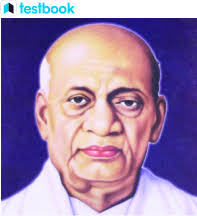

Freedom Fighters Who Fought Valiantly in India's Independence Movement
Freedom Fighter
Bhagat Singh
Bhagat Singh (27 September 1907 – 23 March 1931) a charismatic revolutionary participated in the mistaken murder of a junior British police officer which was a form of retaliation for the death of an Indian nationalist. He later took part in a symbolic Central Legislative Assembly bombing case in Delhi and a hunger strike in jail, which resulted in sympathetic coverage in Indian-owned newspapers which turned him into a household name in the Punjab region.
Mahatma Gandhi
The immense sacrifices that Mohandas Karamchand Gandhi made for India earned him the title of “Father of the Nation”; he was born on October 2, 1869. Along with inspiring numerous other independence movements and human rights movements around the world, he not only helped lead India to independence but also played a significant role in its victory. India is recognized for embracing the concept of nonviolence thanks to Gandhi, popularly known as Bapu. He thought that nonviolent resistance and an unwillingness to cooperate with the British would be enough to bring about independence.
Jawaharlal Neharu
He joined the 1916 Annie Besant-led Home Rule League movement. He was detained multiple times during the struggle for freedom, and between 1921 and 1945 he spent a total of 9 years behind bars. He was an active member of the United Province’s Non-Cooperation movement and served as its leader. He participated in the salt satyagraha as well. While the Indian National Congress desired dominion status, Jawaharlal Nehru and Subash Chandra Bose believed that the Indian National Congress’s ultimate goal should be complete independence, or Poorna Swaraj. On August 15, 1947, he took office as India’s first prime minister.

Sardar Ballam Bhai Patel
Sardar Vallabhbhai Bhai Patel (31 October 1875 – 15 December 1950), commonly known as Sardar, was an Indian lawyer, influential political leader, barrister, and statesman. Who served as the first Home Minister and First deputy minister of India. He is also called the ‘IRONMAN OF INDIA and UNIFIER OF INDIA’.
Subhash Chandra Bos
One of the most successful Indian nationalists in history was Subhash Chandra Bose. He was created in Cuttack on January 23, 1897. He was widely referred to as Netaji. He was a fervent nationalist, and his unwavering patriotism made him a hero. Bose belonged to the radical faction of the Indian independence movement. He served as the head of a radical young wing of Congress from the beginning of the 1920s to the end of 1930. He is believed to have died in an aviation accident on August 18, 1945, although the cause of his passing is still unknown.